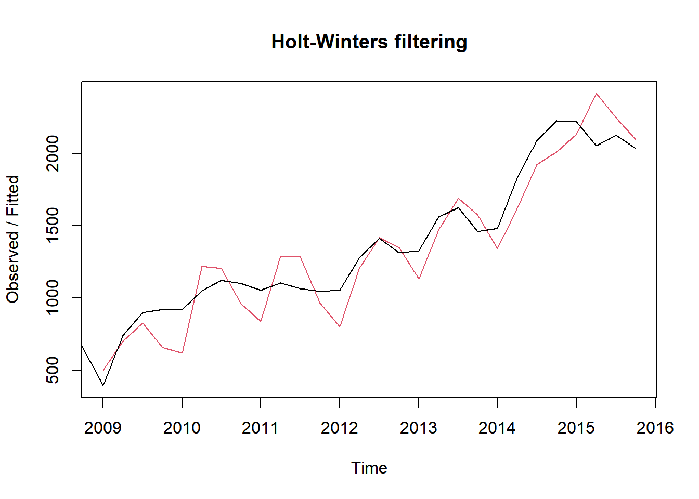

R时间序列挖掘
Boylad · 2018-11-14
创建时间序列数据
一个时间序列是一个带有时间索引的随机变量序列，在R中，我们可以使用ts()函数从给定的向量或者矩阵中创建时间序列数据。
首先，读取台湾半导体财务报告数据给R：
setwd("C:\\Users\\Boylad\\Documents\\mydata\\R_for_Data_Science_Cookbook")
tw2330 <- read.csv("tw2330_finance.csv", header = TRUE)
str(tw2330)
## 'data.frame': 32 obs. of 5 variables:
## $ Time : chr "2008Q1" "2008Q2" "2008Q3" "2008Q4" ...
## $ Total.Income : int 875 881 930 646 395 742 899 921 922 1050 ...
## $ Gross.Sales : num 382 402 431 202 74.8 343 429 447 442 519 ...
## $ Operating.Income: num 291 304 329 120 12.1 251 320 336 341 405 ...
## $ EPS : num 1.1 1.12 1.17 0.48 0.06 0.95 1.18 1.26 1.3 1.55 ...使用ts()函数把财经数据转换为时间序列对象：
m <- ts(tw2330$Total.Income, frequency = 4, start = c(2008, 1))使用函数class判断数据类型：
class(m)
## [1] "ts"打印时间序列的内容：
m
## Qtr1 Qtr2 Qtr3 Qtr4
## 2008 875 881 930 646
## 2009 395 742 899 921
## 2010 922 1050 1122 1101
## 2011 1054 1105 1065 1047
## 2012 1055 1281 1414 1313
## 2013 1328 1559 1626 1458
## 2014 1482 1830 2090 2225
## 2015 2220 2054 2125 2035我们可以使用window分段查看时间序列对象：
m2 <- window(m, start = c(2012, 2), end = c(2014, 2))
m2
## Qtr1 Qtr2 Qtr3 Qtr4
## 2012 1281 1414 1313
## 2013 1328 1559 1626 1458
## 2014 1482 1830我们也可以把整个数据框转换成ts对象(把时间序列之外的所有列转换为时间序列数据)：
m_ts <- ts(tw2330[,-1], start = c(2008,01), frequency = 4)
class(m_ts)
## [1] "mts" "ts" "matrix"
head(m_ts)
## Total.Income Gross.Sales Operating.Income EPS
## [1,] 875 382.0 291.0 1.10
## [2,] 881 402.0 304.0 1.12
## [3,] 930 431.0 329.0 1.17
## [4,] 646 202.0 120.0 0.48
## [5,] 395 74.8 12.1 0.06
## [6,] 742 343.0 251.0 0.95最后，我们可以打印时间序列对象的EPS信息：
m_ts[,"EPS"]
## Qtr1 Qtr2 Qtr3 Qtr4
## 2008 1.10 1.12 1.17 0.48
## 2009 0.06 0.95 1.18 1.26
## 2010 1.30 1.55 1.81 1.57
## 2011 1.40 1.39 1.17 1.22
## 2012 1.29 1.61 1.90 1.60
## 2013 1.53 2.00 2.00 1.73
## 2014 1.85 2.30 2.94 3.09
## 2015 3.05 3.06 2.91 2.81除了使用函数ts创建时间序列对象，也可以使用xts程序包来创建可扩展的时间序列对象。这个程序包提供了更加简单、有用的API来处理时间序列数据。加载xts程序包,使用as.xts()函数把时间序列数据转换成xts对象,查看前6行：
library(xts)
## 载入需要的程辑包：zoo
##
## 载入程辑包：'zoo'
## The following objects are masked from 'package:base':
##
## as.Date, as.Date.numeric
m.xts <- as.xts(m)
head(m.xts)
## [,1]
## 2008 Q1 875
## 2008 Q2 881
## 2008 Q3 930
## 2008 Q4 646
## 2009 Q1 395
## 2009 Q2 742绘制时间序列对象
绘制时间序列对象可以使得数据趋势和季节构成清晰可见。接下来我们介绍如何使用函数plot.ts绘制时间序列对象。
首先，使用函数plot.ts绘制时间序列数据m(我们可以清楚地看到，在经历了2009年收入剧烈下降之后，台湾半导体的总收入逐年上升)：
plot.ts(m)如果数据集包含多个时间序列对象，可以以子图的形式绘制多个时间序列数据：
plot.ts(m_ts, plot.type = "multiple")也可以在一个图中绘制全部4个时间序列对象：
plot.ts(m_ts, plot.type = "single", col = c("red", "green", "blue", "Orange"))还可以单独绘制EPS时间序列信息：
plot.ts(m_ts[,"EPS"])对已xts对象，我们可以使用函数plot.xts绘制时间序列数据：
plot.xts(m.xts)
分解时间序列
季节性时间序列由季节成分、确定趋势成分和不规则成分构成。接下来我们介绍如何使用decompose函数把时间序列分成这3部分。
首先，使用函数window，从m构建时间序列对象m.sub(从图中我们发现时间序列数据似乎受到季节的影响)：
m.sub <- window(m, start = c(2012, 1), end = c(2014, 4))
m.sub
## Qtr1 Qtr2 Qtr3 Qtr4
## 2012 1055 1281 1414 1313
## 2013 1328 1559 1626 1458
## 2014 1482 1830 2090 2225
plot(m.sub)使用函数decompose分解时间序列对象。我们使用加和模式，它会采用下列公式：\(Y(t)=T(t)+S(t)+e(t)\)。我们也可以设置type=“multiplicative”,使用乘积模式，\(Y(t)=T(t)\cdot S(t)+e(t)\)分解时间序列，函数decompose返回一个列表。
components <- decompose(m.sub)然后我们可以使用函数names列出components的属性(列表的元素x是原始数据集，“seasonal”、“trend”和“random”分别对应季节性成分、趋势成分和不规则成分)：
names(components)
## [1] "x" "seasonal" "trend" "random" "figure" "type"从分解的时间序列对象中查看季节成分：
components$seasonal
## Qtr1 Qtr2 Qtr3 Qtr4
## 2012 -124.96875 65.28125 127.59375 -67.90625
## 2013 -124.96875 65.28125 127.59375 -67.90625
## 2014 -124.96875 65.28125 127.59375 -67.90625使用函数plot绘制分解的时间序列成分：
plot(components)从台湾半导体季度财务报告中我们可以发现，公司在第3季度通常要比第1季度获得的利润要高。基于这个观察，我们可以推测数据符合季节性趋势。为了支持这个结论，我们可以从时间序列数据中分解出季节性成分。要做到这一点，我们使用函数decompose把时间序列分成几个不同的成分。对于季节性数据，我们可以把时间序列分解成下列3个成分。
T(s):确定性趋势成分，给出时间序列的线性趋势特点。
S(t):季节性成分，给出时间序列的周期性效果。
e(t): 不规则成分，捕捉数据的白噪声。
LOWESS(局部加权回归散点平滑，Locally Weighted Scatterplot Smoothing)和LOESS(局部回归加权平滑，Locally Weighted Smoothing)是拟合多项式回归模型为局部数据子集的非参数方法。在函数st1中，我们可以使用函数plot在子图中绘制分解后的时间序列成分。
我们可以使用函数st1分解周期性时间序列：
comp1 <- stl(m.sub, s.window = "periodic")
names(comp1)
## [1] "time.series" "weights" "call" "win" "deg"
## [6] "jump" "inner" "outer"我们可以使用函数plot查看分解的时间序列成分：
plot(comp1)平滑时间序列
时间序列分解允许我们从时间序列数据中抽取不同的成分，而平滑技术可以使我们预测时间序列数据的未来取值。接下来我们介绍如何使用函数HoltWinters来平滑时间序列数据。
首先，使用函数HoltWinters执行Winters指数平滑(因为台湾半导体季度财务报告显示了趋势和季节性模式，我们可以使用Winters指数平滑法来平滑时间序列数据。gamma值最大，意味着季节性成分字啊短期预测中更重要)：
m.pre <- HoltWinters(m)
m.pre
## Holt-Winters exponential smoothing with trend and additive seasonal component.
##
## Call:
## HoltWinters(x = m)
##
## Smoothing parameters:
## alpha: 0.8223689
## beta : 0.06468208
## gamma: 1
##
## Coefficients:
## [,1]
## a 1964.30088
## b 32.33727
## s1 -51.47814
## s2 17.84420
## s3 146.26704
## s4 70.69912
names(m.pre)
## [1] "fitted" "x" "alpha" "beta" "gamma"
## [6] "coefficients" "seasonal" "SSE" "call"绘制平滑结果(黑色线表示原始数据集，红色线表示平滑后的时间序列)：
plot(m.pre)
找出模型的误差平方和(这个数值可以用来比较那个模型在平滑过程中表现最好)：
m.pre$SSE
## [1] 798917.9最基础的平滑技术使用移动平均，它利用历史观察平均值计算可能的未来取值。在R中，我们使用stat程序包中的函数HoltWinters执行时间序列平滑。函数HoltWinters包含3种平滑方法，它们是简单指数平滑、Holt指数平滑和Winters指数平滑。所有这些方法使用同一个函数HoltWinters。但是，我们可以基于指定alpha、beta和gamma参数调用不同的方法。
简单指数平滑适用于数据没有趋势或者季节性的模式。这种方法可是使用下列公式表示：
\[F_{t+1}=\alpha x_t+(1-\alpha)F_t\]
在这个公式中，预测值是F，观测值是x，权重\(\alpha\)是一个0到1之间的值。从这个公式我们可以发现，简单指数平滑法是一种加权预测方法；我们可以基于观测样本和之前的预测值做出预测。为了使用简单指数平滑，我们需要在函数HoltWinters中设置beta和gamma为false。
如果数据有趋势模式而没有季节性趋势，我们可以使用Holt指数指数平滑。这种方法会评估给定时间序列的水平和斜率。我们可以使用下列公式表示这个函数。
预测公式： \[F_{t+m}=S_t+b_tm\]
水平公式： \[S_t=\alpha x_t+(1-\alpha)(S_{t-1} +b_{t-1})\]
趋势公式： \[b_t=\beta(S_t-S_{t-1})+(1-\beta)b_{t-1}\]
其中S表示时间t处的水平估计，b表示时间t处的斜率估计，\(\alpha\)是水平的平滑参数，\(\beta\)是趋势的平滑参数。\(\alpha\)和\(\beta\)都在0到1之间。为了使用Holt指数平滑，我们只需要在函数HoltWinters中设置gamma为false。
如果数据既包含趋势模式，也包含季节性模式，我们可以使用Winters指数平滑来估计水平，趋势和季节性成分。
预测公式： \[F_{t+m}=(S_t+b_tm)I_{t-L+m}\]
季节性公式： \[I_t=\gamma\frac{x_t}{S_t}x_t+(1-\gamma)I_{t-L}\]
趋势公式： \[b_t=\beta(S_t-S_{t-1})+(1-\beta)b_{t-1}\]
水平公式： \[S_t=\alpha\frac{x_t}{I_{t-L}}+(1-\alpha)(S_t-b_{t-1})\]
其中，S表示时间t处的水平估计，b表示时间t处的斜率估计，I表示时间t处的季节性成分估计，\(\alpha\)是水平的平滑参数，\(\beta\)是趋势的平滑参数，\(\gamma\)表示季节性成分的平滑参数。\(\alpha、\beta和、gamma\)都设置为true。
除了使用stat程序包中的函数HoltWinters，我们还可以使用fpp程序包，fpp程序包包含许多来自时间序列和线性模型的预测函数；我们也可以在这个程序包中找到HoltWinters函数。下面展示如何使用hw()函数拟合时间序列平滑模型。
首先，加载fpp包：
library(fpp)
## 载入需要的程辑包：forecast
## Registered S3 method overwritten by 'quantmod':
## method from
## as.zoo.data.frame zoo
## 载入需要的程辑包：fma
## 载入需要的程辑包：expsmooth
## 载入需要的程辑包：lmtest
## 载入需要的程辑包：tseries我们可以使用Winters算法来平滑时间序列数据：
fit <- hw(m, seasonal = "additive")
summary(fit)
##
## Forecast method: Holt-Winters' additive method
##
## Model Information:
## Holt-Winters' additive method
##
## Call:
## hw(y = m, seasonal = "additive")
##
## Smoothing parameters:
## alpha = 0.9998
## beta = 1e-04
## gamma = 1e-04
##
## Initial states:
## l = 740.4531
## b = 42.8074
## s = -16.3513 87.1071 25.2596 -96.0153
##
## sigma: 141.9404
##
## AIC AICc BIC
## 436.8438 445.0256 450.0354
##
## Error measures:
## ME RMSE MAE MPE MAPE MASE ACF1
## Training set -1.828286 122.924 96.0665 -1.620764 9.360256 0.3840466 0.219303
##
## Forecasts:
## Point Forecast Lo 80 Hi 80 Lo 95 Hi 95
## 2016 Q1 1998.163 1816.259 2180.067 1719.965 2276.361
## 2016 Q2 2162.207 1904.968 2419.446 1768.794 2555.620
## 2016 Q3 2266.863 1951.805 2581.921 1785.024 2748.702
## 2016 Q4 2206.209 1842.399 2570.019 1649.810 2762.608
## 2017 Q1 2169.370 1762.594 2576.146 1547.259 2791.480
## 2017 Q2 2333.413 1887.794 2779.032 1651.898 3014.928
## 2017 Q3 2438.069 1956.725 2919.413 1701.917 3174.221
## 2017 Q4 2377.415 1862.814 2892.017 1590.400 3164.430最后，我们可以绘制原始时间序列和平滑后的时间序列：
plot.ts(m)
lines(fitted(fit), col = "red")
预测时间序列
使用HoltWinters构建时间序列平滑模型之后，我们可以基于这个模型预测未来取值。接下来我们展示如何利用forecast()函数在时间序列数据上做出预测：
加载forecast包：
library(forecast)我们可以使用forecast()函数预测未来4个季度的收入(我们设置h=4,预测台湾半导体未来4个季度的收入):
income.pre <- forecast(m.pre, h = 4)
summary(income.pre)
##
## Forecast method: HoltWinters
##
## Model Information:
## Holt-Winters exponential smoothing with trend and additive seasonal component.
##
## Call:
## HoltWinters(x = m)
##
## Smoothing parameters:
## alpha: 0.8223689
## beta : 0.06468208
## gamma: 1
##
## Coefficients:
## [,1]
## a 1964.30088
## b 32.33727
## s1 -51.47814
## s2 17.84420
## s3 146.26704
## s4 70.69912
##
## Error measures:
## ME RMSE MAE MPE MAPE MASE ACF1
## Training set 36.86055 168.9165 145.4323 2.887852 12.0432 0.5813971 0.2497206
##
## Forecasts:
## Point Forecast Lo 80 Hi 80 Lo 95 Hi 95
## 2016 Q1 1945.160 1730.025 2160.295 1616.140 2274.180
## 2016 Q2 2046.820 1760.876 2332.763 1609.506 2484.133
## 2016 Q3 2207.580 1858.743 2556.416 1674.080 2741.079
## 2016 Q4 2164.349 1756.533 2572.165 1540.649 2788.050
names(income.pre)
## [1] "method" "model" "level" "mean" "lower" "upper"
## [7] "x" "series" "fitted" "residuals"绘制预测结果(深色阴影覆盖了预测的80%置信区间，浅色阴影覆盖了预测的95%置信区间)：
plot(income.pre)为了评估模型，我们可以使用函数acf对自相关函数估计：
acf(window(income.pre$residuals, start = 2009))也可以对输出的残差执行Ljung_Box检验：
Box.test(income.pre$residuals)
##
## Box-Pierce test
##
## data: income.pre$residuals
## X-squared = 1.7461, df = 1, p-value = 0.1864构建预测模型后，我们可能需要评估预测模型，类似于回归模型，我们可以使用残差，也就是样本内部误差，来评估我们的模型。也就是说，如果我们可以证明残差服从白噪声分布，我们就可以得出结论：残差序列(或者误差)是由随机过程生成的。这意味着模型包含了时间序列的大部分信息，是充分的。
有许多评估残差序列的方法，最直接的是从一个残差中生成自相关图。这里，我们使用acf()函数来计算残差和绘制自相关图。黑色线表示自相关系数，蓝色线表示置信区间，即自相关系数的上下边界。如果自相关系数在边界内部快速的上升和下降，这意味着残差就是白噪声。相反，如果系数总是在边界之上或之下，这说明残差是自相关的。在本例中，我们相信预测模型的残差序列不是自相关的。Ljung-Box检验由下列假设构成： \[H_0: P_1=P_2=\cdots =P_k=0\] \[H_1: \exists_i\le m,令P_i\ne0\] 这种检验用Q统计量来计算相关系数，其中残差序列通过下列公式定义： \[Q=n(n+2)\sum_{i=1}^k\frac{\hat P_i^2}{n-i}\sim X^2(k)\] 其中，n是样本个数，\(\hat P_i\)是第i次滞后的样本自相关，k是滞后总次数。
在原假设下，Q统计量服从\(X^2(k)\)，即自由度为k的卡方分布。但是，如果Q统计量大于\(X_{1-\alpha}^2(k)\)，即自由度为k的卡方分布第\(\alpha\)位分位数，我们可以拒绝原假设。
在本例中，我们对残差序列应用函数Box.test；我们发现p值等于0.1864，这意味着我们不能拒绝空假设。简单地说，这说明残差是白噪声，我们的模型对于预测取值是从分的。
我们也可以用fpp程序包中的函数来预测收入：
library(fpp)我们可以使用函数hw()获取时间序列的平滑模型：
fit <- hw(m, seasonal = "additive")在时间序列图上添加我们的预测:
plot(fit)选取ARIMA模型
指数平滑法要求残差是不相关的。但是，在实际例子中，要求连续值互相之间不相关是不可能的。相反，我们可以使用R中的ARIMA模型来构建考虑自相关的时间序列模型。
首先，模拟一个ARIMA过程，使用函数arima.sim生成时间序列数据(设置自回归模型系数等于0.7,p=1,d=1,q=0来生成100个数据点。从图中我们看到了非平稳时间序列):
set.seed(123)
ts.sim <- arima.sim(list(order = c(1, 1, 0), ar = 0.7), n = 100)
plot(ts.sim)然后，我们可以得到时间序列的差分(使用函数diff()把时间序列差分为平稳时间序列)：
ts.sim.diff <- diff(ts.sim)绘制差分后的时间序列(可以看到非平稳时间序列已经移除)：
plot(ts.sim.diff)使用函数acf生成自相关图(由于自相关图在尾部逐渐消失，我们可以把差分的时间序列看成平稳时间序列，因此我们可以确定差分参数等于1)：
acf(ts.sim.diff)也可以使用pacf生成部分自相关(偏自相关)图：
pacf(ts.sim.diff)自回归积分移动平均模型(Autoregressive Integrated Moving Average Model, ARIMA)也叫作Box-Jenkins模型。ARIMA模型的目的是找出时间序列针对过往取值的最佳拟合模型。ARIMA模型可以形式化为ARIMA(p,d,q)，其中p是自回归模型的阶，d是差分度，q表示移动平均模型。通常，ARIMA模型使用以下5个步骤来拟合时间序列：
可视化时间序列。
把非平稳时间序列差分为平稳时间序列。
绘制ACF和PACF图，找出最优的p和q。
构建ARIMA模型。
做出预测。
我们可以使用下列ACF和PACF行为确定参数：
| 模型 | ACF | PACF |
|---|---|---|
| AR(p) | 尾部逐渐消失 | 舍去p次滞后以外数据 |
| MA(q) | 舍去q次滞后以外数据失 | 尾部逐渐消失 |
| ARMA(p,q) | 尾部逐渐消失失 | 尾部逐渐消失 |
我们的数据中，自相关图尾部逐渐消失，PACF舍弃一次滞后以外数据。因此，我们可以确定AR模型是最佳拟合，p很有可能等于1，q很有可能等0。
为了绘制带有ACF和/或PACF的时间序列，你可以使用tsdisplay()或ggtsdisplay()函数:
tsdisplay(ts.sim.diff)ggtsdisplay(ts.sim.diff)创建ARIMA模型
确定ARIMA模型的最优p、d和q参数后，我们现在可以使用函数Arima(forecast包中)创建ARIMA模型。
首先，我们可以使用时间序列ts.sim创建一个ARIMA模型，其中参数p=1, d=1, q=0(赤池信息准则(Akaike Information Criterion, AIC)和贝叶斯信息准则(Bayesian Information Creterion, BIC)。BIC值或AIC值越小，模型拟合越好。因此，我们可以使用这两个标准，确定我们的模型(也可以生成一个诸如order=c(2,1,0)的arima模型做比较))：
library(forecast)
fit <- Arima(ts.sim, order = c(1, 1, 0))
fit
## Series: ts.sim
## ARIMA(1,1,0)
##
## Coefficients:
## ar1
## 0.7128
## s.e. 0.0685
##
## sigma^2 estimated as 0.7603: log likelihood=-128.04
## AIC=260.09 AICc=260.21 BIC=265.3然后使用accuracy打印模型的训练集误差：
accuracy(fit)
## ME RMSE MAE MPE MAPE MASE
## Training set 0.004938457 0.863265 0.6849681 -41.98798 102.2542 0.7038325
## ACF1
## Training set -0.0006134658除了使用ACF和PACF图确定最优参数外，我们还可以使用auto.arima拟合最优模型(如果我们使用自相关图和部分自相关图确定了差分度，参数的选取就变得很主观了。forecast包中auto.arima()函数自动地找出最佳ARIMA拟合模型。我们设置选取标准为bic。函数会自动找到p=1,d=1和q=0作为模型参数)：
auto.arima(ts.sim, ic = "bic")
## Series: ts.sim
## ARIMA(1,1,0)
##
## Coefficients:
## ar1
## 0.7128
## s.e. 0.0685
##
## sigma^2 estimated as 0.7603: log likelihood=-128.04
## AIC=260.09 AICc=260.21 BIC=265.3为了创建ARIMA模型，我们可以选择非季节性序列ARIMA(p,d,q)，其中，p是自回归模型的阶，d是差分度，q是移动平均模型。如果序列具有季节模式，我们就需要使用季节性ARIMA模型进行建模。这种情形可以形式化为ARIMA(p,d,q)(P,D,Q)m，其中，P、D和Q表示季节性成分的自回归、差分和移动平均模型，m表示每个季节中的周期数。
除了使用forecast包中的Arima()函数，也可以使用stat包中的arima()函数来创建ARIMA模型：
fit2 <- arima((ts.sim))
summary(fit2)
##
## Call:
## arima(x = (ts.sim))
##
## Coefficients:
## intercept
## -0.0543
## s.e. 0.8053
##
## sigma^2 estimated as 65.5: log likelihood = -354.51, aic = 713.02
##
## Training set error measures:
## ME RMSE MAE MPE MAPE MASE ACF1
## Training set -1.796052e-12 8.09349 6.121936 Inf Inf 6.290538 0.9873896**使用ARIMA模型预测。
基于拟合的ARIMA模型，我们可以预测未来值。
首先，使用forecast.Arima(fit)生成对未来值的预测：
fit.predict <- forecast(fit)我们可以使用summary()函数获取预测的汇总信息：
summary(fit.predict)
##
## Forecast method: ARIMA(1,1,0)
##
## Model Information:
## Series: ts.sim
## ARIMA(1,1,0)
##
## Coefficients:
## ar1
## 0.7128
## s.e. 0.0685
##
## sigma^2 estimated as 0.7603: log likelihood=-128.04
## AIC=260.09 AICc=260.21 BIC=265.3
##
## Error measures:
## ME RMSE MAE MPE MAPE MASE
## Training set 0.004938457 0.863265 0.6849681 -41.98798 102.2542 0.7038325
## ACF1
## Training set -0.0006134658
##
## Forecasts:
## Point Forecast Lo 80 Hi 80 Lo 95 Hi 95
## 102 2.879852 1.7624142 3.997289 1.1708784 4.588825
## 103 2.605201 0.3889232 4.821479 -0.7843035 5.994706
## 104 2.409429 -0.9178536 5.736711 -2.6792104 7.498068
## 105 2.269881 -2.1349164 6.674678 -4.4666750 9.006436
## 106 2.170410 -3.2593426 7.600162 -6.1336799 10.474500
## 107 2.099507 -4.2965989 8.495612 -7.6824925 11.881506
## 108 2.048966 -5.2551824 9.353115 -9.1217650 13.219697
## 109 2.012941 -6.1441993 10.170080 -10.4623283 14.488209
## 110 1.987261 -6.9722993 10.946822 -11.7152043 15.689727
## 111 1.968957 -7.7472568 11.685171 -12.8907097 16.828624然后，我们可以使用曲线图绘制预测结果：
plot(fit.predict)接着，可以使用自相关图评估我们的模型(自相关系数在边界内部快速地上升和下降意味着残差就是白噪声)：
acf(fit.predict$residuals)也可以对拟合的残差使用Ljung-Box检验(确定残差是否自相关，较大的p值意味着我们不能拒绝原假设，即残差是白噪声，模型对于预测值是充分的)：
Box.test(fit.predict$residuals)
##
## Box-Pierce test
##
## data: fit.predict$residuals
## X-squared = 3.801e-05, df = 1, p-value = 0.9951除了使用函数acf和box.test执行评估，也可以使用函数tsdiag，从不同的角度诊断时间序列拟合效果：
tsdiag(fit)基于ARIMA模型预测股票价格
因为股票历史价格也是一种时间序列，所以我们可以构建ARIMA模型预测给定股票的未来价格。接下来，我们会介绍如何使用quantmod程序包加载历史股票价格，并使用ARIMA模型对股票价格做出预测。
使用quantmod从Yahoo下载Facebook历史股票价格(quantmod程序包提供了各种量化财务模型和来自多个源的API。要获取历史股票价格，我们使用韩式getSymbols()获取自2015年1月1日以来，Facebook公司的历史股票价格。然后，quantmod会加载Facebook股票价格，并保存在一个变量FB中)：
library(quantmod)
## 载入需要的程辑包：TTR
## Version 0.4-0 included new data defaults. See ?getSymbols.
getSymbols("FB", src = "yahoo", from = "2015-01-01")
## 'getSymbols' currently uses auto.assign=TRUE by default, but will
## use auto.assign=FALSE in 0.5-0. You will still be able to use
## 'loadSymbols' to automatically load data. getOption("getSymbols.env")
## and getOption("getSymbols.auto.assign") will still be checked for
## alternate defaults.
##
## This message is shown once per session and may be disabled by setting
## options("getSymbols.warning4.0"=FALSE). See ?getSymbols for details.
## [1] "FB"
FB <- FB然后，使用曲线绘制历史股票价格：
plot(FB$FB.Adjusted)使用函数auto.arima找出最佳(非季节性ARIMA(0,1,0))模型：
fit <- auto.arima(FB$FB.Close, ic = "bic")
fit
## Series: FB$FB.Close
## ARIMA(0,1,0)
##
## sigma^2 estimated as 11.63: log likelihood=-3870.47
## AIC=7742.94 AICc=7742.95 BIC=7748.23在同一个图中绘制历史股票价格(黑线)和拟合曲线(红线)：
plot(as.ts(FB$FB.Close))
lines(fitted(fit), col = "red")接着，可以使用函数forecast()基于所构建的ARIMA模型预测未来股价：
fit.forecast <- forecast(fit)
fit.forecast
## Point Forecast Lo 80 Hi 80 Lo 95 Hi 95
## 1465 284.79 280.4203 289.1598 278.1071 291.4730
## 1466 284.79 278.6103 290.9698 275.3389 294.2411
## 1467 284.79 277.2214 292.3586 273.2148 296.3652
## 1468 284.79 276.0505 293.5295 271.4241 298.1559
## 1469 284.79 275.0190 294.5611 269.8465 299.7335
## 1470 284.79 274.0864 295.4937 268.4202 301.1598
## 1471 284.79 273.2287 296.3513 267.1086 302.4714
## 1472 284.79 272.4305 297.1495 265.8878 303.6923
## 1473 284.79 271.6808 297.8993 264.7412 304.8389
## 1474 284.79 270.9717 298.6084 263.6567 305.9234最后可以生成预测图(蓝色阴影绘制预测结果)：
plot(fit.forecast)因为quantmod会把历史股票价格加载为一个xts对象，我们可以使用函数lag()转换时间序列，我们可以计算股票的收益，并用柱状图绘制出来。从柱状图中我们可以看到股票优劣的分布：
FB_Return <- diff(FB$FB.Close) / lag(FB$FB.Close, k = -1) * 100
head(FB_Return)
## FB.Close
## 2015-01-02 NA
## 2015-01-05 -1.6546224
## 2015-01-06 -1.3657255
## 2015-01-07 0.0000000
## 2015-01-08 2.6112658
## 2015-01-09 -0.5735167
hist(FB_Return)
以上内容整理自《R for Data Science Cookbook》